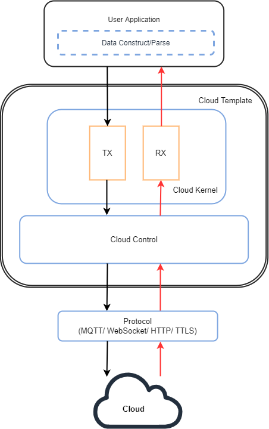
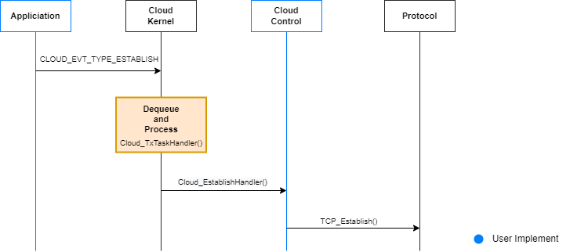
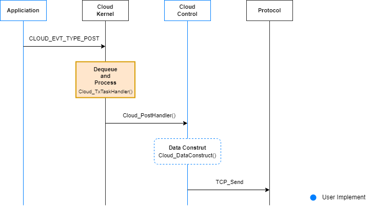
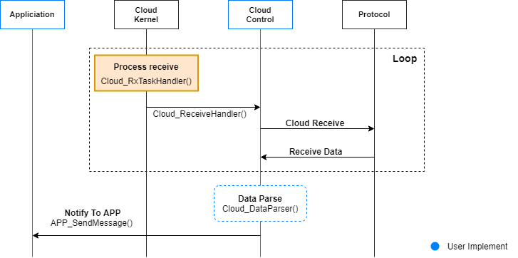

Cloud
Cloud Template
Cloud Template is a template architecture that help the developer to integrate the device with the public/private cloud service and achieve the low power consumption and short latency purpose.
The Cloud Template located at quick_dev/app_ref/cloud/cloud_template.
Advantages of Cloud Template
Advantages of Cloud Template are low power consumption and short latency. Cloud Template is divided into two tasks to be executed, different from a single task.
If the cloud template is a single task, it will change to receive data after posting data to the cloud. These two events will run alternately, and the task will continue to be executed. This task would not enter the suspended state, and there will be times when it can’t receive data during the post process.
The two tasks can make RX task to receive data. When there is no data to receive, RX task will enter the state of suspension. It can achieve the effect of power saving. When posting data to the cloud, RX task can receive data more immediately. Rx task will not waste time waiting for the completion of the post to achieve the advantage of short latency.
Cloud Template Architecture
There are two components in Cloud Template, Cloud Kernel, and Cloud Control.
-
Cloud Kernel : Cloud Kernel is responsible for receiving cloud events and data, then passing to event's handlers.
-
Cloud Control : Cloud Control include several handlers. These handlers are responsible for executing cloud events through calling Protocol API.
Note
The developer can follow Opulinks provided template or implement event and event handlers depends on the features of the cloud to port.
The following figure illustrates the Cloud template architecture, and the Cloud task process.

Initialize
Before porting the public/private cloud, please follow below steps to initiate.
void APP_CldInit(void)
{
// user implement
Cloud_Init();
}
The Cloud TX task and Cloud RX task will be initiated in Cloud_Init.
void Cloud_Init(void)
{
// create event group
EG_Create(&g_tCloudEventGroup);
// init tx task
Cloud_TxTaskInit();
// init rx task
Cloud_RxTaskInit();
}
Several events can be handled in Cloud TX task:
- establishing a connection with the cloud
- disconnecting with the cloud
- binding to the cloud
- keeping alive with the cloud
- waiting for the ack of the cloud
- posting to cloud.
How many events should be handled is depends on the features of the cloud to port.
For example, the cloud establish event in the cloud template example. The Cloud TX task will receive cloud events, and execute the correspnding handlers found in event table g_tCloudTxEvtHandlerTbl. These handlers are responsible for executing cloud events through calling Protocol API.
These handlers are located at Cloud Control.c.
Note
The developer can implement event and event handlers depends on the features of the cloud to port.
static T_CloudTxEvtHandlerTbl g_tCloudTxEvtHandlerTbl[] =
{
{CLOUD_EVT_TYPE_INIT, Cloud_InitHandler},
{CLOUD_EVT_TYPE_ESTABLISH, Cloud_EstablishHandler},
{CLOUD_EVT_TYPE_DISCONNECT, Cloud_DisconnectHandler},
{CLOUD_EVT_TYPE_TIMEOUT, Cloud_TimeoutHandler},
{CLOUD_EVT_TYPE_BINDING, Cloud_BindingHandler},
{CLOUD_EVT_TYPE_KEEP_ALIVE, Cloud_KeepAliveHandler},
{CLOUD_EVT_TYPE_ACK, Cloud_AckHandler},
{CLOUD_EVT_TYPE_POST, Cloud_PostHandler},
#if (CLOUD_TX_DATA_BACKUP_ENABLED == 1)
{CLOUD_EVT_TYPE_POST_BACKUP, Cloud_PostBackupHandler},
#endif
};
Establish Connection With Cloud
If the developer wanting to establish a connection with the cloud, the developer sends establish events from application to Cloud Kernel. Cloud TX task could get this event and data to pass to cloud control. The corresponding handler Cloud_EstablishHandler would get this event and call Protocol API (ex: TCP_Establish) to establish connection.

Cloud_EstablishHandler (Cloud Control) handles the connection establishment with the cloud. The developer can call Protocol API to achieve cloud connection in Cloud_EstablishHandler.
void Cloud_EstablishHandler(uint32_t u32EventId, void *pData, uint32_t u32DataLen)
{
// user implement
// 1. establish connection
// 2. determine the connect status
// if connect success - set connection status as online
// Cloud_OnlineStatusSet(true);
// if connect fail
// error handle - call retry connection timer
// osTimerStart(g_tCloudConnectRetryTimer, ConnRetryDuration);
// 3. if connect success, start keep alive timer
// Cloud_TimerStart(CLOUD_TMR_KEEP_ALIVE, CLOUD_KEEP_ALIVE_TIME);
}
Post Data To Cloud
If the developer wanting to post data to the cloud, the developer sends post event and data from application to Cloud Kernel. Cloud TX task could get these event and data to pass cloud control. The developer can choose to construct your data and call Cloud_DataConstruct or you can also skip this step if you don't need it. The corresponding handler Cloud_PostHandler would pass data to Cloud_PostData.Cloud_PostData call Protocol API (ex:TCP_Send) to send data to cloud.
Note
The developer can implement the blue section in below sequence chart depends on the features of the cloud to port. ex: event, handler and data construct(optional).

Cloud_PostHandler (Cloud Control) handles data posting to the cloud. The developer can call Protocol API to achieve to post data to the cloud in Cloud_PostHandler.
void Cloud_PostHandler(uint32_t u32EventId, void *pData, uint32_t u32DataLen)
{
// check connection first
if(false == Cloud_OnlineStatusGet())
{
OPL_LOG_INFO(CLOUD, "Cloud disconnected");
}
// user implement
#if (CLOUD_TX_DATA_BACKUP_ENABLED == 1)
// 1. create your own scenario to backup data by using RingBuf (Cloud_RingBuf___)
// 2. construct data for post (if required)
// Cloud_DataConstruct(pData, u32DataLen);
// 3. post data
// 4. send event CLOUD_EVT_TYPE_POST_BACKUP if RingBuf not empty
#else
// 1. construct income data for post (if required)
// Cloud_DataConstruct(pData, u32DataLen);
// 2. post data
#endif /* CLOUD_TX_DATA_BACKUP_ENABLED */
}
Receive Data from Cloud
If the developer receiving data from the cloud, Cloud RX task in cloud kernel could call Cloud_ReceiveHandler in Cloud Control. Receive loop is composed of cloud RX task and Cloud_ReceiveHandler, Cloud_ReceiveHandler would call Protocol API(ex:TCP_Recv) to receive data from protocol. The developer can choose to parse data and call Cloud_DataParser in Cloud Control or skip this step. The user appliciation would receive data.
Note
The developer can implement the blue section in below sequence chart depends on the features of the cloud to port. ex: event, handler and data parse(optional).

In cloud_kernel.c (Cloud Kernel), Cloud RX execute in Cloud_ReceiveHandler. Cloud_ReceiveHandler would handle receiving data from cloud. The developer can call Protocol API to achieve to receive data from the cloud in Cloud_ReceiveHandler.
void Cloud_ReceiveHandler(void)
{
// user implement
// 1. receive data from cloud
// 2. determine the receive status
// if received success - trigger data parser
// Cloud_DataParser(pData, u32DataLen); //(marked to avoid compiler error)
// if received fail
// error handle
// WARNING: IF DO NOTHING IN RECEIVE HANDLER, THE DELAY MUST EXIST
// osDelay(1000);
}
Cloud Control Handler Template
In addition to the previous handler, Opulinks also provided the following handler template, the developer can implement this handler depends on the features of the cloud to port.
Cloud_DisconnectHandler (Cloud Control) handles the dsiconnection to the cloud. The developer can call Protocol API to achieve cloud disconnection in Cloud_DisconnectHandler.
void Cloud_DisconnectHandler(uint32_t u32EventId, void *pData, uint32_t u32DataLen)
{
// user implement
// 1. close connection
// 2. determine the disconnect result and change the connection status
// if disconnect success - set connection status as offline
// Cloud_OnlineStatusSet(false);
// if disconnect fail
// error handle
// 3. if disconnect success, stop keep alive timer
// Cloud_TimerStop(CLOUD_TMR_KEEP_ALIVE);
}
Cloud_BindingHandler (Cloud Control) handles the binding to the cloud. The developer can call Protocol API to achieve cloud binding in Cloud_BindingHandler.
void Cloud_BindingHandler(uint32_t u32EventId, void *pData, uint32_t u32DataLen)
{
// check connection first
if(false == Cloud_OnlineStatusGet())
{
OPL_LOG_INFO(CLOUD, "Cloud disconnected");
}
// user implement
// 1. binding process
}
Cloud_KeepAliveHandler (Cloud Control) handles the keeping alive with the cloud. The developer can call Protocol API to achieve keeping alive with the cloud in Cloud_KeepAliveHandler.
void Cloud_KeepAliveHandler(uint32_t u32EventId, void *pData, uint32_t u32DataLen)
{
// check connection first
if(false == Cloud_OnlineStatusGet())
{
OPL_LOG_INFO(CLOUD, "Cloud disconnected");
}
// user implement
// 1. post keep alive data
// 2. restart keep alive timer
// Cloud_TimerStart(CLOUD_TMR_KEEP_ALIVE, CLOUD_KEEP_ALIVE_TIME);
}
Cloud_AckHandler (Cloud Control) handles the ack posting to the cloud. The developer can call Protocol API to achieve to post ack to the cloud in Cloud_AckHandler.
void Cloud_AckHandler(uint32_t u32EventId, void *pData, uint32_t u32DataLen)
{
// check connection first
if(false == Cloud_OnlineStatusGet())
{
OPL_LOG_INFO(CLOUD, "Cloud disconnected");
}
// user implement
// 1. post ack data
}
How To...
How to port public/private cloud that utilizes Cloud Template
The developer can copy the folder quick_dev\app_ref\cloud\cloud_template to quick_dev\app_ref\cloud that copied folder could rename my_cloud to execute cloud process. There are two important files cloud_kernel.c (Cloud Kernel) & cloud_ctrl.c (Cloud Control).
Cloud Kernel is responsible for receiving cloud events and data, then passing to these event's handlers. These handlers are located at Cloud Control.
In cloud_kernel.c (Cloud Kernel), there are two components that are Cloud_TxTaskHandler (Cloud TX) and Cloud_RxTaskHandler (Cloud RX).
- Cloud TX process
Cloud_TxTaskHandler is based on the cloud kernel event table g_tCloudTxEvtHandlerTbl. Some important events that are CLOUD_EVT_TYPE_ESTABLISH (establish connection with the cloud), CLOUD_EVT_TYPE_DISCONNECT (disconnect to the cloud), CLOUD_EVT_TYPE_KEEP_ALIVE (keep alive with the cloud), CLOUD_EVT_TYPE_ACK (response ack to the cloud) and CLOUD_EVT_TYPE_POST (post data to the cloud). There are the corresponding handlers (Cloud Control) to handle these events and pass to protocol to execute cloud kernel event.
// cloud kernel event table
static T_CloudTxEvtHandlerTbl g_tCloudTxEvtHandlerTbl[] =
{
{CLOUD_EVT_TYPE_INIT, Cloud_InitHandler},
{CLOUD_EVT_TYPE_ESTABLISH, Cloud_EstablishHandler},
{CLOUD_EVT_TYPE_DISCONNECT, Cloud_DisconnectHandler},
{CLOUD_EVT_TYPE_TIMEOUT, Cloud_TimeoutHandler},
{CLOUD_EVT_TYPE_BINDING, Cloud_BindingHandler},
{CLOUD_EVT_TYPE_KEEP_ALIVE, Cloud_KeepAliveHandler},
{CLOUD_EVT_TYPE_ACK, Cloud_AckHandler},
{CLOUD_EVT_TYPE_POST, Cloud_PostHandler},
#if (CLOUD_TX_DATA_BACKUP_ENABLED == 1)
{CLOUD_EVT_TYPE_POST_BACKUP, Cloud_PostBackupHandler},
#endif
};
For example, if wnating to post datas to the cloud (TCP Cloud), the developer send post events and data from application to Cloud Kernel (Cloud TX task). Cloud TX task could gets these event and data to pass the corresponding handler Cloud_PostHandler. Cloud_PostHandler would construct data and pass data to Cloud_PostData.
void Cloud_PostData(uint8_t *pu8Data, uint32_t u32DataLen)
{
...
i32Ret = TCP_Send(g_ptrCloudTcpHdlId, (const char *)pu8Data, u32DataLen, TCP_TX_POST_TIMEOUT);
...
}
Cloud_PostData call TCP_Send (Cloud Control) to send data to send (TCP Protocol).
int TCP_Send(uintptr_t fd, const char *buf, uint32_t len, uint32_t timeout_ms)
{
...
ret = send(fd, buf, len, 0);
...
}
- Cloud RX process
In cloud_kernel.c (Cloud Kernel), Cloud RX execute in Cloud_ReceiveHandler. Cloud_ReceiveHandler would call TCP_Recv (Cloud Control) to receive data from protocol.
For example, if receiving data from the cloud (TCP CLOUD), the developer could use TCP_Recv (Cloud Control) call select (TCP protocol) to receive data and pass to Cloud_ReceiveHandler (Cloud Kernel).
nt TCP_Recv(uintptr_t fd, char *buf, uint32_t len, uint32_t timeout_ms)
{
...
ret = select(fd + 1, &sets, NULL, NULL, &timeout);
...
}